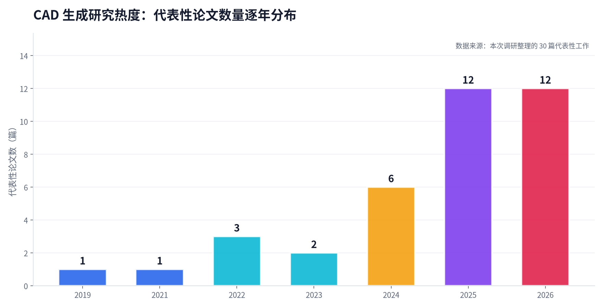
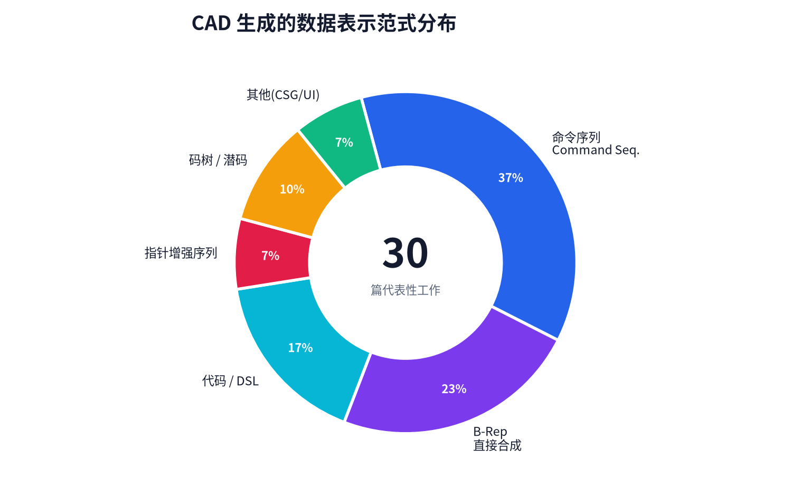
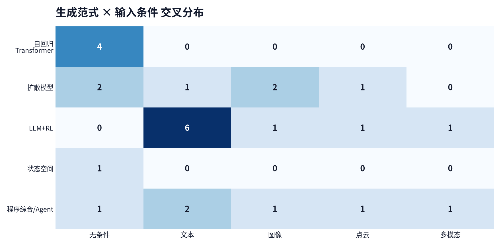
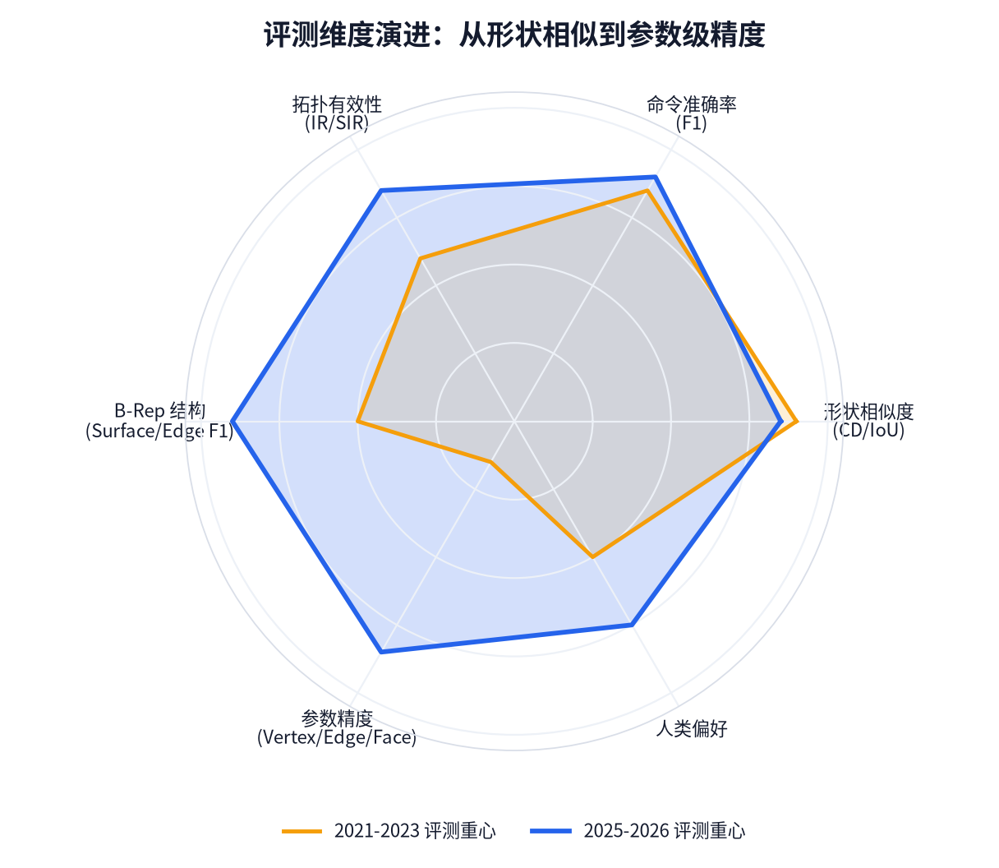

计算机辅助设计（CAD）的 AI 生成，正在从"生成一个好看的形状"走向"生成一段可编辑、可参数化、可约束、可制造的建模过程"。 本报告系统梳理该方向的核心设定体系（数据表示 / 输入条件 / 生成范式 / 训练与评测）， 并逐篇说明代表性工作的方法与动机。
CAD 的本质不是"一个 3D 形状"，而是一段带参数、带约束、带历史的建模过程。 工程师先画草图、再拉伸、再切除、再倒角——每一步都携带着参数与设计意图。 因此 CAD 生成任务可统一表述为：把设计意图（文本 / 图像 / 点云 / 工程图）映射为一段可被 CAD 内核执行并验证的程序。
① 建模历史树（参数树 / CSG 树）：记录"怎么建出来的"，天然可编辑、可改参数，但序列长、长程依赖强。
② B-Rep 边界表示：用 NURBS 精确描述面 / 边 / 顶点及其拓扑关系，是制造与仿真的标准格式，但拓扑不规则稀疏，生成难度大。
设计历史与长程依赖 · 几何约束求解 · 拓扑正确性（无自交 / 水密 / 非流形）· 设计意图保持 · 真实工业数据稀缺。
调研发现，几乎所有 CAD 生成工作都可以用四个维度的"设定"来精确刻画。理解这四维，就理解了整个领域的设计空间。
CAD 用什么"语言"表达？命令序列、代码 DSL、B-Rep、CSG 树、指针增强序列、潜码本——表示决定了能力上限。
无条件 / 文本 / 图像 / 点云 / 工程图 / 多模态 / UI 操作序列。条件越丰富，越贴近真实设计场景。
自回归 Transformer / 扩散模型 / 状态空间模型 / LLM 微调 + 强化学习 / 程序综合与 Agent 工具调用。
序列信号（teacher forcing）/ 视觉信号（渲染反馈 RL）/ 几何信号（Chamfer、有效性）；评测从形状级走向参数级。

| 表示范式 | 具体形式 | 优势 | 局限 | 代表工作 |
|---|---|---|---|---|
| 命令序列 | 草图（线/弧/圆）+ 拉伸 + 布尔，离散命令 + 连续参数 | token 短、推理快、结构清晰、易自回归 | 无实体选择能力；连续参数量化误差破坏拓扑；难支持倒角/倒圆 | DeepCAD · SkexGen · Text2CAD · CADFusion · CAD-Llama |
| 代码 / DSL | CadQuery / build123d / Python DSL 脚本 | 参数精度天然高、操作丰富、可执行可验证 | token 长约 4 倍（平均 424.75）、推理慢（4.72–6.61s）、易结构错误 | CAD-Coder · LLM4CAD · Zero-to-CAD · CAD-Tokenizer |
| B-Rep 直接合成 | 面 / 边 / 顶点 + NURBS 曲面 + 拓扑关系 | 精确、制造就绪、工业标准 | 拓扑不规则稀疏、生成难度大、需保证有效性 | SolidGen · BrepGen · BrepDiff · DTGBrepGen · AutoBrep · HiFi-BRep |
| 建模历史树 / CSG 树 | 参数树、构造实体几何树 | 紧凑、可编辑、保留设计过程 | 连续 + 离散混合搜索空间难处理 | InverseCSG · CADTrans（码树） |
| 指针增强序列 | Label / Value / Pointer 三类 token，指针直接引用 B-Rep 面 / 边 | 支持实体选择（倒角/倒圆）、大幅降低量化误差、token 仍短 | 需 B-Rep 编码器 + GNN 特征聚合，架构更复杂 | Pointer-CAD v1 / v2 |
| 潜码 / 码本 | VQ-VAE 原语级 token、三级神经码树、正则化离散码本 | 压缩、层次化、缓解长序列 | 存在码本坍缩风险，需正则化策略 | CAD-Tokenizer · CADTrans · 层次化离散扩散 |

从随机噪声生成 CAD 模型，用于学习形状分布、数据增强。
自然语言是最自然的设计意图接口，也是当前最热的方向。
逆向工程场景：从单视图 / 多视图 / 无约束图像恢复参数化模型。
从 3D 扫描数据重建 CAD 构建序列，工业逆向工程刚需。
文本 / 图像 / 点云统一到一个框架，贴近真实设计输入。
从工程制图（含隐藏线灰化 HLG 视图）生成 STEP/B-Rep；或预测 CAD 软件的 UI 操作序列。

把 CAD 命令序列当作语言，用 Transformer 逐 token 预测下一个操作。 典型架构是"编码器 + 解码器"两段式：编码器把序列压成 latent，解码器自回归还原。
用去噪扩散过程生成 CAD 表示。B-Rep 方向尤其流行，因为可以设计结构化潜空间来保证拓扑有效性。
先 SFT 建立基础生成能力，再用 RL 对齐"渲染效果"或"几何精度"。 奖励可来自视觉偏好、Chamfer 距离、代码可执行性。
用 Mamba 等 SSM 架构替代注意力，以线性复杂度处理超长 CAD 命令序列。
把 CAD 生成视为程序合成问题：用约束求解（SAT）逆向恢复 CSG 树； 或让 LLM Agent 调用 CAD 工具链，形成"规划—执行—反思"闭环。
B-Rep 生成的两条路线：多阶段逐元素生成（面→边→顶点）保证拓扑有效，但级联依赖僵硬； 单阶段一次性生成，速度快 3–21 倍且支持编辑。
用 ground-truth 参数序列做 teacher forcing。提供序列结构与参数操作的直接监督，但只强调局部 token 连续性，难捕捉全局外观。
把生成的序列渲染出来，用视觉偏好做 RL 奖励。弥补"渲染多对一"问题，让模型学到"看起来对不对"。
Chamfer Distance、有效性、拓扑约束、代码可执行性。直接对齐"能不能用"，但 CAD 内核不可微，需通过 RL 或后处理施加。
| 数据集 | 规模 / 特点 | 主要用途 |
|---|---|---|
| SketchGraphs | 1500 万真实 2D 草图，几何约束图表示 | 草图生成、自动约束、草图补全 |
| ABC | 百万级 B-Rep 与网格模型 | B-Rep 生成、几何深度学习基准 |
| Fusion 360 Gallery | 8,625 个草图-拉伸序列，附 Fusion 360 Gym 执行环境 | 程序化 CAD 重建 |
| DeepCAD | 约 17.8 万模型，命令序列（草图+拉伸） | 命令序列生成的事实基准 |
| WHUCAD / CADParser | 引入制造零件、完整设计历史、旋转/圆角/倒角等复杂操作 | 提升工业复杂度 |
| Text2CAD | 为 CAD 模型加入多层次文本描述 | 文本到 CAD 生成 |
| CAD-MLLM | 整合文本、图像、点云与命令序列 | 多模态 CAD 生成 |
| OmniCAD / Recap-OmniCAD+ | 57.5 万模型，含倒角 / 倒圆等工业级操作 | 工业级操作生成 |
| OmniCAD-Plan / Plan+ | 20.2 万 / 20.9 万有效模型，计划级监督 | Plan-Then-Construct 范式 |
| HPSketch | 基于历史的参数化草图数据集，含抛物线/双曲线/旋转/倒角/倒圆与约束、选择机制 | 高级工程草图建模 |
| OpenCAD / Seek-CAD | 开放基准与自精炼数据集 | 生成与理解评测 |
Chamfer Distance (CD) IoU COV MMD JSD R coverage D JSD
F1（命令 / 参数准确率）SegE（分割误差，衡量拓扑正确性）
IR（无效率）SIR（自交率）DangEL（悬边长度）FluxEE（密封质量）valid_ratio
Surface F1 Edge F1 Vertex F1 Topology F1
Vertex Accuracy：预测顶点与 GT 最近点欧氏距离在容差内才算匹配。
Edge Accuracy：不仅端点定位正确，底层几何参数（圆弧圆心与半径、圆法向等）也须在容差内对齐。
Face Accuracy：所有边界边被正确识别，且原始体类型（平面/圆柱/圆锥/球/圆环）与 GT 一致。
RMR@3：错误面不超过 3 个的模型占比，衡量真实 CAD 工作流中的可用性。

方法：Transformer 自编码器 + 自回归生成。命令集 {Line, Arc, Circle, EOS, SOL, Ext}，每个命令由离散类型与连续参数组成，参数经量化后嵌入。
方法：1500 万真实 2D 草图，表示为几何约束图（节点=图元，边=约束），附开源数据处理管线。
方法：把 mesh 逆向为 CSG 树，形式化为程序综合问题。先用 RANSAC + 图割做鲁棒基元检测（解连续搜索），再用 SAT 求解器 Sketch 解纯离散搜索。
方法：解耦编码器分别编码拓扑、几何与构造信息，再自回归生成草图-拉伸序列。
方法：自回归直接合成 B-Rep 结构，逐元素生成顶点、边、面。
方法：用 LLM 对齐文本 / 图像 / 点云等多模态特征与 CAD 命令序列的向量化表示，实现多模态条件生成。
方法：Transformer 框架 + 多层次文本标注（从粗略到精细描述），把自然语言映射为参数化 CAD 命令序列。
方法：扩散模型 + 结构化潜几何，多阶段依次生成面、边、顶点。
方法：以 LLM 为骨干，交替进行序列学习（SL）与视觉反馈（VF）两个训练阶段：SL 用真值序列保证逻辑连贯，VF 奖励渲染后视觉更优的序列。
方法：四步——① 自回归 Transformer 学 CAD 命令序列 latent；② 对比学习对齐 CAD latent 与图像 latent；③ 条件潜扩散按图像 latent 生成 CAD latent；④ 预训练 decoder 解码回参数化序列，交给几何内核生成实体。
方法：三阶段训练。阶段 1 用 Transformer 自编码器编码 CAD 命令序列（{SOL, L, A, R} + 拉伸 E）；阶段 2 用几何条件编码器提取深度图与表面法线（DINO 预训练）；阶段 3 对齐生成。
方法：利用 LLM 生成参数化 3D CAD 模型，采用 Sketch-and-Extrude Modeling（SEM）格式表示 CAD 对象。
方法：用状态空间模型（Mamba）做 3D CAD 生成建模，替代注意力机制。
方法：单阶段扩散直接生成 B-Rep。核心是"带掩码的 UV 网格表示"（面参数域离散为 N×N 网格 + 可见性掩码）+ 异步噪声调度（坐标 [0,1000]，掩码 [0,500]）+ 纯几何后处理恢复实体。
方法：把模型分解为实体、轮廓、环三种原语，用向量量化对抗网络训练三个正则化离散码本，构建自上而下的码树，再用 Transformer 自回归生成。
方法：用序列化 VQ-VAE 做原语级池化，把草图-拉伸对压缩为多个离散 token；训练 adapter 对齐预训练词表与骨干嵌入；引入有限状态自动机（FSA）约束解码保证语法合法。
方法：多模态 CAD 重建模型，同时处理点云、图像、文本三种输入。两阶段：大规模程序化生成数据上 SFT，再做在线 RL。
方法：三类 token——Label（操作语义）、Value（数值参数）、Pointer（直接引用 B-Rep 面/边）。B-Rep 编码为无向面邻接图，GNN 聚合特征；Qwen2.5 + LoRA 微调，双预测头（token 分类 + 128 维指针嵌入余弦匹配）。多步自回归，每步以文本 + 前序 B-Rep 为条件。
方法：先让模型输出结构化设计计划（Plan），再据此构造 CAD。基于 Qwen3 标注 OmniCAD-Plan（20.2 万）/ Plan+（20.9 万）计划级监督数据。提出三级几何精度指标（Vertex / Edge / Face Accuracy）+ RMR@3。
方法：用视觉语言模型 + 强化学习增强参数化 CAD 模型生成。
方法：自精炼生成建模，通过 DeepSeek 做局部推理修正生成结果。
方法：LLM 生成可执行 CadQuery 脚本，并引入"基于文本的查询机制"——LLM 用自然语言指定几何选择，由 B-Rep grounding transformer 定位到目标原语。SFT 建立基础能力，RL 提升泛化。
方法：面向工业级零件图纸的高保真 B-Rep 生成，在 DeepCAD 与 ABC 两个公认基准上评测。
方法：无真实数据条件下，用 agentic 合成引擎在百万级规模生成可解释 CAD 程序；ViT-LLaMA 架构从多视图图像端到端生成可运行 CAD 代码。全流程开源（合成引擎、评估工具链、100K 数据集、微调代码与 checkpoint）。
方法：多模态工业 CAD 智能基础模型套件，把 CAD 生成表述为"多模态程序生成"——给定语言或视觉证据表达的意图，模型产出 CAD DSL 程序。聚合 BenchCAD、CADBench、P3D-Bench 等基准。
方法：把文本到 CAD 重构为生成 CadQuery Python 脚本。两阶段：SFT 建立基础，再用 GRPO 强化学习，奖励 = 几何奖励（执行代码算 Chamfer Distance）+ 格式奖励（语法合法性与执行成功率）。
方法：通过微调 LLM 实现统一、通用的可控 CAD 生成。
方法：基于历史的参数化草图数据集。创新地用命令序列结构表示草图，把图元、操作、约束融为一体；包含抛物线、双曲线、旋转、倒角、倒圆等高级工程命令，并设计命名规则让网络学会"选择"草图图元。
方法：多模态特征融合 + 时序 Transformer 解码器。输入为目标 CAD 图像、过去 k 帧 UI 图像、历史动作序列、时序嵌入；双预测头输出命令类型（MoveTo/PressKey/Scroll/Type/Click）与参数。用双向 Chamfer 距离（阈值 CD < 0.02）判定成功。
方法：探索工具调用型 LLM 在 Text-to-CAD 中的应用，用强化学习优化工具使用策略。
① 从外观到设计。从"生成一个看起来像的形状"转向"生成可编辑、可参数化、可约束、可制造的设计"。
② 从单模态到多模态。文本、图像、点云统一到一个框架（CAD-MLLM、VisCAD、cadrille）。
③ 从 SFT 到 SFT + RL。用视觉反馈、几何奖励、代码可执行性做强化学习对齐。
④ 从单模型到 Agent 工具链。LLM 调用 CAD 内核形成"规划—执行—反思"闭环（Zero-to-CAD、text-to-cad）。
① 几何约束与参数化编辑：许多方法只生成最终几何，缺少可求解的内部约束系统。
② 拓扑正确性：非流形拓扑仍易出错，后处理偶尔失败。
③ 设计意图保持：生成结果是否真正理解用户意图。
④ 长序列与复杂操作：真实工业建模历史仍稀缺。
⑤ 评测协议工业化：从形状相似度走向参数级精度（Pointer-CAD v2 已开先河）。
⑥ 多轮交互：真实设计是迭代过程，现有方法多为一次性生成。